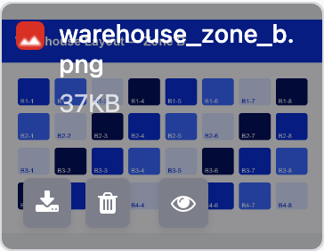
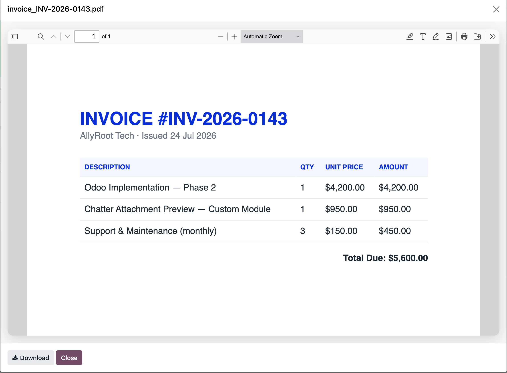
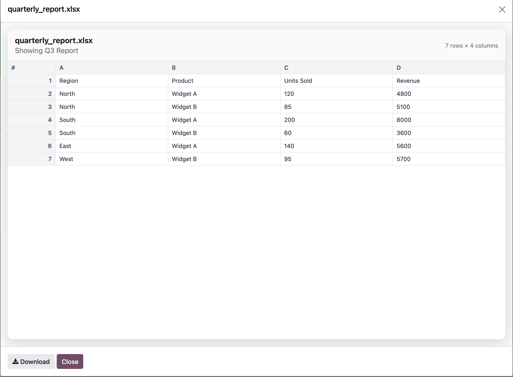
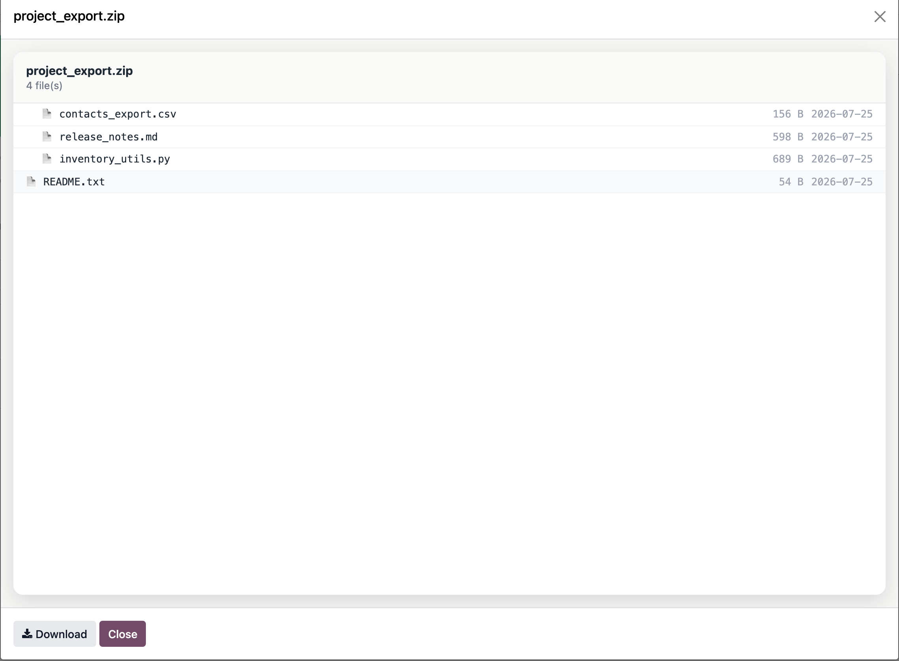
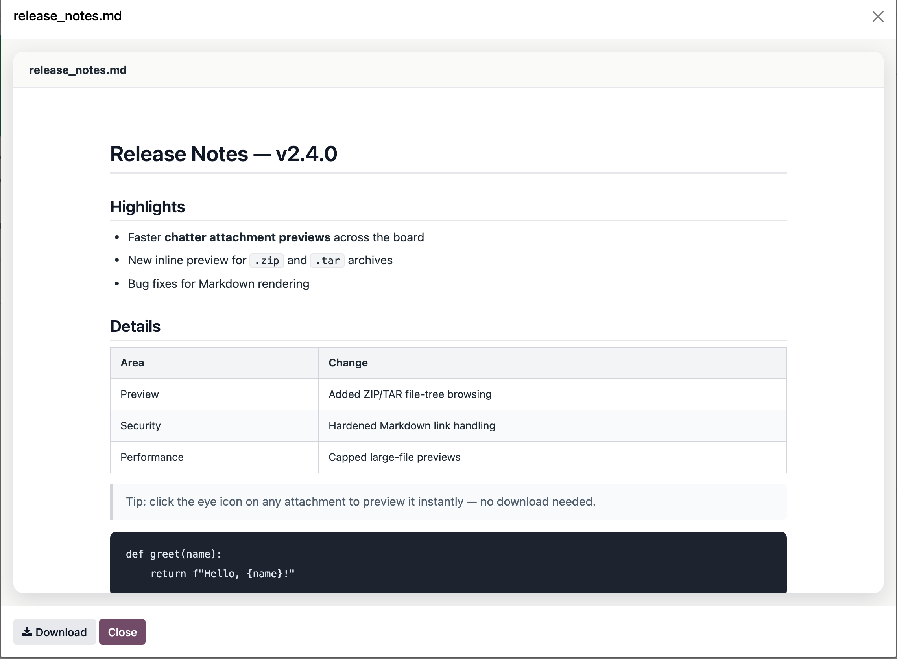

Chatter Attachment Preview adds a Preview button to Odoo chatter attachments. Open images, PDFs, spreadsheets, Office documents, archives, Markdown, code, video and audio directly in an Odoo dialog.
The attachment type is detected from the actual file content, not only its filename, so files preview gracefully whenever possible.
The same Preview button adapts to every file type.





| Category | Formats |
| Images | PNG, JPG, GIF, WEBP, SVG, BMP, ICO |
| Video and audio | MP4, WEBM, MOV, MP3, WAV, FLAC, AAC |
| Documents | PDF, DOCX, PPTX, ODT, ODP, RTF |
| Spreadsheets | CSV, XLSX, XLS |
| Archives | ZIP, TAR, TAR.GZ, TAR.BZ2, TAR.XZ |
| Text and code | Markdown, Python, JavaScript, TypeScript, JSON, YAML, XML, HTML, CSS, SQL, logs and more |
Install Chatter Attachment Preview and keep working while you inspect every attachment.